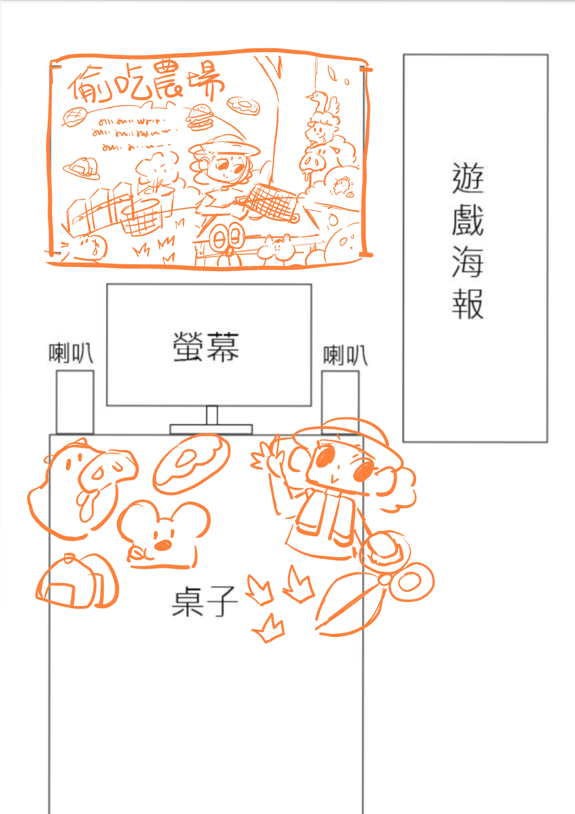
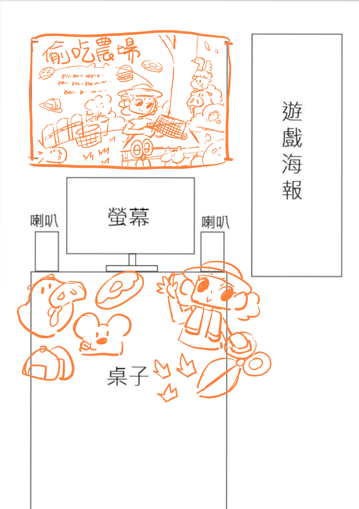

八、展場設計
我的展場設計分為橫向的大海報和直式的說明海報，說明海報中有簡潔的遊戲介紹，和用途說的
方式呈現，為了讓整體看起來更活潑可愛，我也製作了一些遊戲有出現的圖案當布置。

 

八、自我反思與收穫
在這次的遊戲製作課程我深刻地學會不放棄是什麼，雖然整個專案只有我和另一位程式組組員，但製作過程必須一直告訴自己這不是做不好和做不完的藉口，我堅信只要跟著老師進度和遊戲內容做微調一定能將遊戲製作完成，初期製作的時候也遇到了不少問題使整體效率和團隊氣氛下降了不少，因為我們都是第一次接觸遊戲製作也只能不斷得做協調和討論，一定也少不了爭執，但內心都明確彼此是為了讓遊戲製作的更好。同時也學習到情緒管理、包容和釋放壓力，個人在製作過程覺得最困難的是有條有理的做好每件事情，因為我清楚知道我的缺點是做事太浪漫派，所以在製作時常被自己的疏忽絆倒，這也是在這次過程學習到的重點，最後我想說這次的遊戲製作，雖然犧牲了很多休息時間，但我覺得我在過程中提升了不少能力，但一定還有很大的進步空間等著我繼續向前闖。